Ознакомление с инструментами поиска файлов и фильтрации текстовых данных. Приобретение практических навыков: по управлению процессами (и заданиями), по проверке использования диска и обслуживанию файловых систем.
Записываю в file.txt названия файлов, содержащихся в каталоге
etc
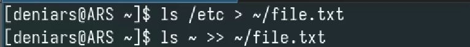
Из file.txt все файлы .conf и записываем их conf.txt
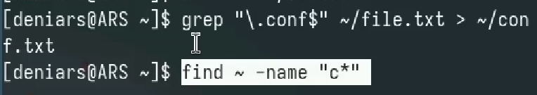
Файлы, которые начинаются на с из домашнего каталога
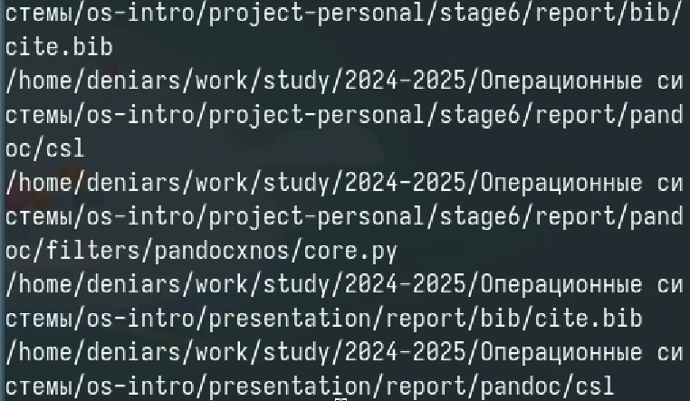
Вывожу файлы, которые на начинаются на h из /etc
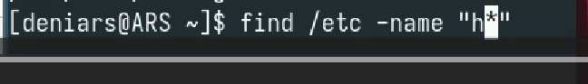
Запускаю в фоновом режиме процесс, который будет записывать в файл
~/logfile файлы, имена которых начинаются с log.
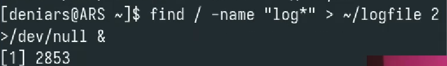
Удалите файл ~/logfile.
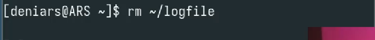
Запускаю из консоли в фоновом режиме редактор gedit.
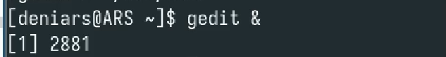
Определите идентификатор процесса gedit
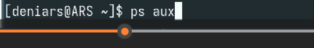
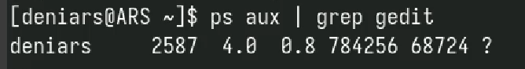
С помощью kill убиваю процесс gedit
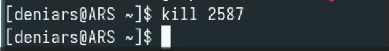
С помощью df и du изучаю диск
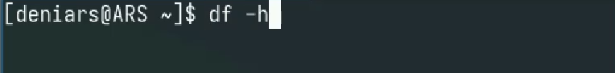
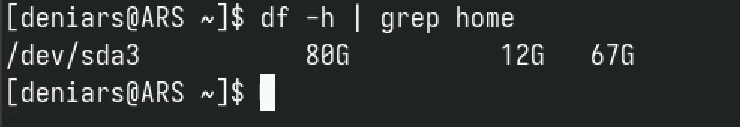
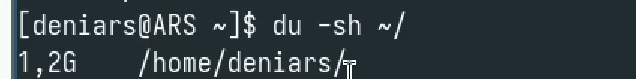
Вывожу все каталоги из всей системы
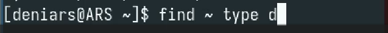
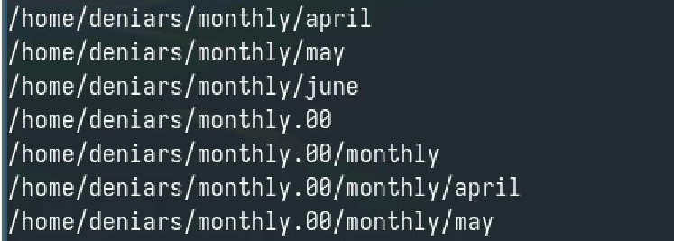
Мы научились лучше использовать unix системы.